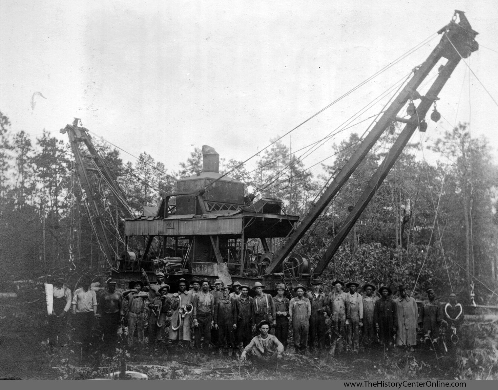

From the Caddo mounds to now
Angelina County’s story in order, about twelve hundred years of it. Every entry comes from a page on this site, so tap “Read the story” for the whole thing.
Before Texas was Texas
- About 800Caddo and Spain
The Caddo build their mounds
Around the year 800, Caddo people chose a bluff above the Neches River, about 26 miles west of where Nacogdoches sits now, and built a permanent village and ceremonial center.
Read the story → - 1690Caddo and Spain
The first mission in Texas
In 1690 the Spanish built Mission San Francisco de los Tejas in a Caddo village near present-day Weches.
Read the story → - 1773–1779Caddo and Spain
Ordered out, and back again
In 1773 Spain ordered its settlers out of East Texas. They didn’t stay gone. Antonio Gil Y’Barbo led them back, and in 1779 they rebuilt Nacogdoches on the old mission site.
Read the story → - 1834Families
Mexican land grants
Most early settlers held Mexican grants dated 1834–35, under the empresarios Zavala and Vehlein.
Read the story → A new county
- About 1840Families
The Renfros settle the prairie
Renfro Prairie, near present-day Huntington, takes its name from the Renfro family, who settled there around 1840.
Read the story → - 1844Water
Cotton floats down the Angelina
In 1844 Moses and Robert Patton proved the Angelina could carry freight, floating 192 bales of cotton down it on a barge.
Read the story → - 1846The county
Named for the little angel
The river was named for her, and in 1846 the new county was named for the river.
Read the story → - 1847Black history
The first state count
The 1847 state census counted 154 enslaved people among the county’s 834 residents.
Read the story → - 1853Black history
The mill on Mill Creek
At the county’s water-powered mill on Mill Creek, built in 1853, the county history names one of the men who worked it: Berry Roberts, who was enslaved.
Read the story → - 1860
- 1861The county
The county that said no
Angelina County voted no, 184 to 139. Of the 35 counties historians count as East Texas, it was the only one where a majority voted against secession.
Read the story → - 1865Black history
Freedom reaches George Hackney
The news of freedom reached them on June 19, 1865, the day Texans now celebrate as Juneteenth.
Read the story → - 1877Water
The Laura runs aground
In March 1877 the Laura sat stuck in low water for two weeks.
Read the story → - 1878Families
The first Sunday school
Mrs. P. C. Abney couldn’t read or write. She taught herself so she could teach the Bible, and in 1878 she started the county’s first Sunday school with her own 12 children and the neighbors’ kids.
Read the story → Rails, mills and timber towns
- 1882Rails and timber
The railroad makes Lufkin
Lufkin didn’t exist until the Houston, East and West Texas Railway laid track through here in 1882.
Read the story → - 1891Water
A standpipe on Cotton Square
In 1891 the town built its first waterworks, with a standpipe in the middle of Cotton Square.
Read the story → - 1892The county
Lufkin takes the courthouse
On Jan. 2, 1892, Lufkin won the county seat, 1,076 to 436.
Read the story → - 1894Rails and timber
Diboll, a company town
Inside Mill No. 1, Diboll, 1907. American Lumberman Collection, courtesy of The History Center, Diboll, Texas. In 1894 Temple built a sawmill on the same rail line and founded Diboll as a company town.
Read the story → - 1900Families
Huntington’s first school
Huntington’s first school opened in 1900 on the site of the Renfro home, across the street from today’s school.
Read the story → - 1907The county
Telephones come to Huntington
Huntington got telephones in 1907 and electricity in 1927, and incorporated in 1937 with Fowler Burris as its first mayor.
Read the story → - 1911Land and forest
A law to protect the water
The federal law behind national forests in the East, the 1911 Weeks Act, let the government buy forest and cut-over land in the watersheds of navigable streams to protect their flow.
Read the story → - 1917Land and forest
Fire watch in Huntington
In 1917, when the state’s new forestry department split East Texas into five fire districts, one was headquartered in Huntington.
Read the story → - 1918Families
Lillian Russell and the 1918 flu
When the 1918 flu came through Oak Flat she was 15, and she nursed sick neighbors day and night.
Read the story → - 1923Rails and timber
Oil, and a Lufkin pumping unit
After talks with Humble Oil, the foundry built its first enclosed-gear oil pumping unit in 1923.
Read the story → - 1928Land and forest
A lookout in a hickory tree
Knox Ivie was hired in 1928 at $85 a month to watch for fires from a crow’s nest in a tall hickory.
Read the story → - 1929Families
Fred Graham marries Lillian Russell
He met Lillian Russell on the Ferris wheel at the Lufkin county fair, and they married on Christmas Eve 1929 at the First Christian Church parsonage in Lufkin, with a honeymoon in Galveston.
Read the story → - 1931Black history
Olivia Ray Hackney teaches
Olivia Ray Hackney taught at Dunbar School from 1931; in 1964 Carver School was renamed Hackney in her honor.
Read the story → Forests, a paper mill and a lake
- 1936Land and forest
Four national forests

Steam skidder and crew, 1907. American Lumberman Collection, courtesy of The History Center, Diboll, Texas. In 1936 President Franklin Roosevelt made four of them national forests: the Angelina, the Davy Crockett, the Sabine and the Sam Houston.
Read the story → - 1940Water
The paper mill opens
Southland Paper Mills opened east of Lufkin in 1940 and became the biggest water user in Angelina County.
Read the story → - 1942Families
Grandpa Bill Russell, the last veteran
When he died in 1942 the county history counted him as Angelina County’s last surviving Confederate veteran.
Read the story → - 1944The county
Prisoners of war at the fairgrounds
In 1944 the Army opened a prisoner of war camp at the Lufkin fairgrounds, and German prisoners were put to work salvaging timber.
Read the story → - 1953Families
A library for the men who didn’t come home
McMullen Memorial Library was dedicated June 21, 1953, in memory of 19 Huntington-area men who died in World War II.
Read the story → - 1956–1966Water
Sam Rayburn Reservoir
The U.S. Army Corps of Engineers built Sam Rayburn Reservoir from 1956 to 1966. Its stated purposes were hydroelectric power and storing water for cities and industry.
Read the story → - 1957Families
Hayden Russell, world champion
Hayden played on the 1957 Lufkin PONY League All-Stars, the team that won the PONY League World Series, beating Maywood, Illinois, 5–2 in the final.
Read the story → - 1964Land and forest
Neighbors start the fight for the Thicket
In October 1964, local people met at the Saratoga Methodist Church and started the Big Thicket Association.
Read the story → - 1968Black history
Diboll integrates
Diboll integrated its schools by 1968, ahead of most of the region.
Read the story → - 1970Water
A warning about the Carrizo
Report 110 warned in 1970 that the Carrizo was close to its safe limit around Lufkin.
Read the story → - 1974Land and forest
The Big Thicket is saved
On Oct. 11, 1974, President Gerald Ford signed the law creating Big Thicket National Preserve, one of the first two national preserves in the country.
Read the story → Our water, now
- 2009Water
Lufkin buys the mill’s water
In 2009 the City agreed to pay $15 million for the old paper mill’s water system: 13 wells, Lake Kurth, and the Angelina River rights.
Read the story → - 2013Families
Winnie writes it down
In 2013 Winnie Graham wrote down 165 years of one family’s life in these woods: the Renfros, Browns, Sowells, Russells and Grahams of Oak Flat.
Read the story → - 2023Water
A fish kill in Mill Creek
In August 2023, sewage spills from a Lufkin lift station caused a fish kill in Mill Creek.
Read the story → - March 2026Water
A data center at the old mill
The 936 reports Amp Z's proposed 2.1-gigawatt AI data center, Project Lufkin, at the old Southland mill site.
Read the story → - Nov. 2026Water
New rules for big wells
The board that permits big wells adopted new rules for them on Nov. 9, 2026.
Read the story →
The next ring is ours to write.
Know a date that belongs here? A wedding, a church homecoming, the year your family came? Send it with whatever you have.
Add your family’s storySee it on the mapGo treasure huntingDates and wording come from the pages they link to. Those pages list their sources.